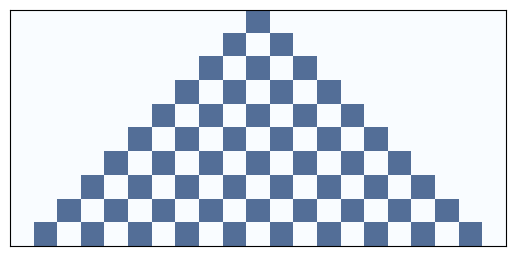
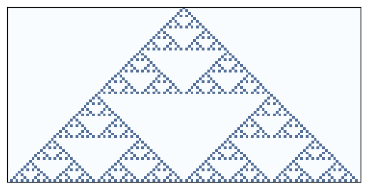
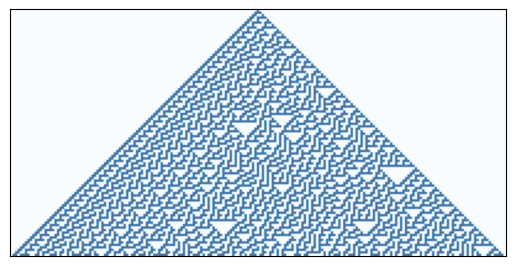
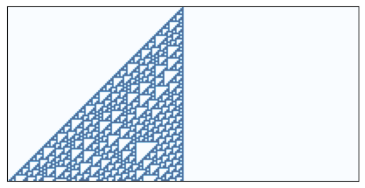
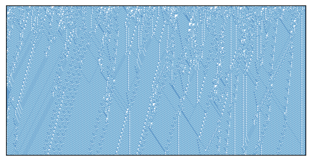
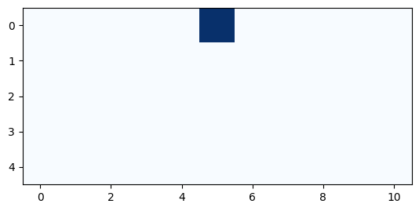
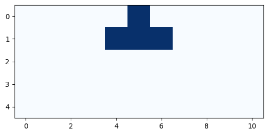
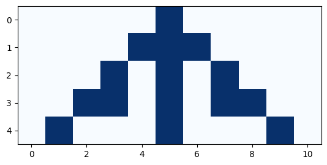
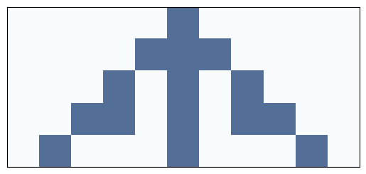

The second edition of Think Complexity is available from Bookshop.org and Amazon (those are affiliate links). If you are enjoying the free, online version, consider buying me a coffee.
5. Cellular Automatons#
A cellular automaton (CA) is a model of a world with very simple physics. “Cellular” means that the world is divided into discrete chunks, called cells. An “automaton” is a machine that performs computations — it could be a real machine, but more often the “machine” is a mathematical abstraction or a computer simulation.
This chapter presents experiments Stephen Wolfram performed in the 1980s, showing that some cellular automatons display surprisingly complicated behavior, including the ability to perform arbitrary computations.
I discuss implications of these results, and at the end of the chapter I suggest methods for implementing CAs efficiently in Python.
Click here to run this notebook on Colab.
import matplotlib.pyplot as plt
import numpy as np
Show code cell content
from os.path import basename, exists
def download(url):
filename = basename(url)
if not exists(filename):
from urllib.request import urlretrieve
local, _ = urlretrieve(url, filename)
print('Downloaded ' + local)
download('https://github.com/AllenDowney/ThinkComplexity/raw/v3/nb/utils.py')
download('https://github.com/AllenDowney/ThinkComplexity/raw/v3/nb/Cell1D.py')
from utils import savefig
# make a directory for figures
!mkdir -p figs
# Cell1D.py contains the implementation we develop at the end of
# the chapter; we use it to draw the figures before then.
from Cell1D import Cell1D, draw_ca
5.1. A simple CA#
Cellular automatons (you might also see the plural “automata”) are governed by rules that determine how the state of the cells changes over time.
As a trivial example, consider a cellular automaton (CA) with a single cell. The state of the cell during time step \(i\) is an integer, \(x_i\). As an initial condition, suppose \(x_0 = 0\).
Now all we need is a rule. Arbitrarily, I’ll pick \(x_{i+1} = x_{i} + 1\), which says that during each time step, the state of the CA gets incremented by 1. So this CA performs a simple calculation: it counts.
But this CA is atypical; normally the number of possible states is finite. As an example, suppose a cell can only have one of two states, 0 or 1. For a 2-state CA, we could write a rule like \(x_{i+1} = (x_{i} + 1) \% 2\), where \(\%\) is the remainder (or modulus) operator.
Here’s a simple implementation of this CA, with one cell; the array holds its state during each time step.
n = 10
x = np.zeros(n)
print(x)
[0. 0. 0. 0. 0. 0. 0. 0. 0. 0.]
To get the state of the cell in the next time step, we increment the current state mod 2.
x[1] = (x[0] + 1) % 2
x[1]
np.float64(1.0)
Filling in the rest of the array.
for i in range(2, n):
x[i] = (x[i-1] + 1) % 2
print(x)
[0. 1. 0. 1. 0. 1. 0. 1. 0. 1.]
The behavior of this CA is simple: it blinks. That is, the state of the cell switches between 0 and 1 during each time step.
Most CAs are deterministic, which means that rules do not have any random elements; given the same initial state, they always produce the same result. But some CAs are nondeterministic; we will see examples later.
The CA in this section has only one cell, so we can think of it as zero-dimensional. In the rest of this chapter, we explore one-dimensional (1-D) CAs; in the next chapter we explore two-dimensional CAs.
5.2. Wolfram’s experiment#
In the early 1980s Stephen Wolfram published a series of papers presenting a systematic study of 1-D CAs. He identified four categories of behavior, each more interesting than the last. You can read one of these papers, “Statistical mechanics of cellular automata,” at https://thinkcomplex.com/ca.
In Wolfram’s experiments, the cells are arranged in a lattice (which you might remember from Chapter 3) where each cell is connected to two neighbors. The lattice can be finite, infinite, or arranged in a ring.
The rules that determine how the system evolves in time are based on the notion of a “neighborhood”, which is the set of cells that determines the next state of a given cell. Wolfram’s experiments use a 3-cell neighborhood: the cell itself and its two neighbors.
In these experiments, the cells have two states, denoted 0 and 1 or “off” and “on”. A rule can be summarized by a table that maps from the state of the neighborhood (a tuple of three states) to the next state of the center cell. The following table shows an example:
prev |
111 |
110 |
101 |
100 |
011 |
010 |
001 |
000 |
|---|---|---|---|---|---|---|---|---|
next |
0 |
0 |
1 |
1 |
0 |
0 |
1 |
0 |
The first row shows the eight states a neighborhood can be in. The second row shows the state of the center cell during the next time step. As a concise encoding of this table, Wolfram suggested reading the bottom row as a binary number; because 00110010 in binary is 50 in decimal, Wolfram calls this CA “Rule 50”.
The following figure shows the effect of Rule 50 over 10 time steps.
draw_ca(rule=50, n=10)
savefig('figs/chap05-1')
Saving figure to file figs/chap05-1

The first row shows the state of the system during the first time step; it starts with one cell “on” and the rest “off”. The second row shows the state of the system during the next time step, and so on.
The triangular shape in the figure is typical of these CAs; it is a consequence of the shape of the neighborhood. In one time step, each cell influences the state of one neighbor in either direction. During the next time step, that influence can propagate one more cell in each direction. So each cell in the past has a “triangle of influence” that includes all of the cells that can be affected by it.
5.3. Classifying CAs#
How many of these CAs are there?
Since each cell is either on or off, we can specify the state of a cell with a single bit. In a neighborhood with three cells, there are 8 possible configurations, so there are 8 entries in the rule tables. And since each entry contains a single bit, we can specify a table using 8 bits. With 8 bits, we can specify 256 different rules.
One of Wolfram’s first experiments with CAs was to test all 256 possibilities and classify them.
Examining the results visually, he proposed that the behavior of CAs can be grouped into four classes. Class 1 contains the simplest (and least interesting) CAs, the ones that evolve from almost any starting condition to the same uniform pattern. As a trivial example, Rule 0 always generates an empty pattern after one time step.
Rule 50 is an example of Class 2. It generates a simple pattern with nested structure, that is, a pattern that contains many smaller versions of itself. Rule 18 makes the nested structure even clearer; the following figure shows what it looks like after 64 steps.
draw_ca(rule=18, n=64)
savefig('figs/chap05-3')
Saving figure to file figs/chap05-3

This pattern resembles the Sierpiński triangle, which you can read about at https://thinkcomplex.com/sier.
Some Class 2 CAs generate patterns that are intricate and pretty, but compared to Classes 3 and 4, they are relatively simple.
5.4. Randomness#
Class 3 contains CAs that generate randomness. Rule 30 is an example; the following figure shows what it looks like after 100 time steps.
draw_ca(rule=30, n=100)
savefig('figs/chap05-4')
Saving figure to file figs/chap05-4

Along the left side there is an apparent pattern, and on the right side there are triangles in various sizes, but the center seems quite random. In fact, if you take the center column and treat it as a sequence of bits, it is hard to distinguish from a truly random sequence. It passes many of the statistical tests people use to test whether a sequence of bits is random.
Programs that produce random-seeming numbers are called pseudo-random number generators (PRNGs). They are not considered truly random because:
Many of them produce sequences with regularities that can be detected statistically. For example, the original implementation of
randin the C library used a linear congruential generator that yielded sequences with easily detectable serial correlations.Any PRNG that uses a finite amount of state (that is, storage) will eventually repeat itself. One of the characteristics of a generator is the period of this repetition.
The underlying process is fundamentally deterministic, unlike some physical processes, like radioactive decay and thermal noise, that are considered to be fundamentally random.
Modern PRNGs produce sequences that are statistically indistinguishable from random, and they can be implemented with periods so long that the universe will collapse before they repeat. The existence of these generators raises the question of whether there is any real difference between a good quality pseudo-random sequence and a sequence generated by a “truly” random process. In A New Kind of Science, Wolfram argues that there is not (pages 315–326).
5.5. Determinism#
The existence of Class 3 CAs is surprising. To explain how surprising, let me start with philosophical determinism (see https://thinkcomplex.com/deter). Many philosophical stances are hard to define precisely because they come in a variety of flavors. I often find it useful to define them with a list of statements ordered from weak to strong:
D1: Deterministic models can make accurate predictions for some physical systems.
D2: Many physical systems can be modeled by deterministic processes, but some are intrinsically random.
D3: All events are caused by prior events, but many physical systems are nevertheless fundamentally unpredictable.
D4: All events are caused by prior events, and can (at least in principle) be predicted.
My goal in constructing this range is to make D1 so weak that virtually everyone would accept it, D4 so strong that almost no one would accept it, with intermediate statements that some people accept.
The center of mass of world opinion swings along this range in response to historical developments and scientific discoveries. Prior to the scientific revolution, many people regarded the working of the universe as fundamentally unpredictable or controlled by supernatural forces. After the triumphs of Newtonian mechanics, some optimists came to believe something like D4; for example, in 1814 Pierre-Simon Laplace wrote:
We may regard the present state of the universe as the effect of its past and the cause of its future. An intellect which at a certain moment would know all forces that set nature in motion, and all positions of all items of which nature is composed, if this intellect were also vast enough to submit these data to analysis, it would embrace in a single formula the movements of the greatest bodies of the universe and those of the tiniest atom; for such an intellect nothing would be uncertain and the future just like the past would be present before its eyes.
This “intellect” is now called “Laplace’s Demon”. See https://thinkcomplex.com/demon. The word “demon” in this context has the sense of “spirit”, with no implication of evil.
Discoveries in the 19th and 20th centuries gradually dismantled Laplace’s hope. Thermodynamics, radioactivity, and quantum mechanics posed successive challenges to strong forms of determinism.
In the 1960s chaos theory showed that in some deterministic systems prediction is only possible over short time scales, limited by precision in the measurement of initial conditions.
Most of these systems are continuous in space (if not time) and nonlinear, so the complexity of their behavior is not entirely surprising. Wolfram’s demonstration of complex behavior in simple cellular automatons is more surprising — and disturbing, at least to a deterministic world view.
So far I have focused on scientific challenges to determinism, but the longest-standing objection is the apparent conflict between determinism and human free will. Complexity science provides a possible resolution of this conflict; I’ll come back to this topic in Chapter 10.
5.6. Spaceships#
The behavior of Class 4 CAs is even more surprising. Several 1-D CAs, most notably Rule 110, are Turing complete, which means that they can compute any computable function. This property, also called universality, was proved by Matthew Cook in 1998. See https://thinkcomplex.com/r110.
The following figure shows what Rule 110 looks like with an initial condition of a single cell and 100 time steps.
draw_ca(rule=110, n=100)
savefig('figs/chap05-5')
Saving figure to file figs/chap05-5

At this time scale it is not apparent that anything special is going on. There are some regular patterns but also some features that are hard to characterize.
The following figure shows a bigger picture, starting with a random initial condition and 600 time steps:
np.random.seed(21)
n = 600
ca = Cell1D(rule=110, n=n)
ca.start_random()
ca.loop(n-1)
ca.draw()
savefig('figs/chap05-6')
Saving figure to file figs/chap05-6

After about 100 steps the background settles into a simple repeating pattern, but there are a number of persistent structures that appear as disturbances in the background. Some of these structures are stable, so they appear as vertical lines. Others translate in space, appearing as diagonals with different slopes, depending on how many time steps they take to shift by one column. These structures are called spaceships.
Collisions between spaceships yield different results depending on the types of the spaceships and the phase they are in when they collide. Some collisions annihilate both ships; others leave one ship unchanged; still others yield one or more ships of different types.
These collisions are the basis of computation in a Rule 110 CA. If you think of spaceships as signals that propagate through space, and collisions as gates that compute logical operations like AND and OR, you can see what it means for a CA to perform a computation.
5.7. Universality#
To understand universality, we have to understand computability theory, which is about models of computation and what they compute.
One of the most general models of computation is the Turing machine, which is an abstract computer proposed by Alan Turing in 1936. A Turing machine is a 1-D CA, infinite in both directions, augmented with a read-write head. At any time, the head is positioned over a single cell. It can read the state of that cell (usually there are only two states) and it can write a new value into the cell.
In addition, the machine has a register, which records the state of the machine (one of a finite number of states), and a table of rules. For each machine state and cell state, the table specifies an action. Actions include modifying the cell the head is over and moving one cell to the left or right.
A Turing machine is not a practical design for a computer, but it models common computer architectures. For a given program running on a real computer, it is possible (at least in principle) to construct a Turing machine that performs an equivalent computation.
The Turing machine is useful because it is possible to characterize the set of functions that can be computed by a Turing machine, which is what Turing did. Functions in this set are called “Turing computable”.
To say that a Turing machine can compute any Turing-computable function is a tautology: it is true by definition. But Turing-computability is more interesting than that.
It turns out that just about every reasonable model of computation anyone has come up with is “Turing complete”; that is, it can compute exactly the same set of functions as the Turing machine. Some of these models, like lambda calculus, are very different from a Turing machine, so their equivalence is surprising.
This observation led to the Church-Turing Thesis, which is the claim that these definitions of computability capture something essential that is independent of any particular model of computation.
The Rule 110 CA is yet another model of computation, and remarkable for its simplicity. That it, too, turns out to be Turing complete lends support to the Church-Turing Thesis.
In A New Kind of Science, Wolfram states a variation of this thesis, which he calls the “principle of computational equivalence” (see https://thinkcomplex.com/equiv):
Almost all processes that are not obviously simple can be viewed as computations of equivalent sophistication.
More specifically, the principle of computational equivalence says that systems found in the natural world can perform computations up to a maximal (“universal”) level of computational power, and that most systems do in fact attain this maximal level of computational power. Consequently, most systems are computationally equivalent.
Applying these definitions to CAs, Classes 1 and 2 are “obviously simple”. It may be less obvious that Class 3 is simple, but in a way perfect randomness is as simple as perfect order; complexity happens in between. So Wolfram’s claim is that Class 4 behavior is common in the natural world, and that almost all systems that manifest it are computationally equivalent.
5.8. Falsifiability#
Wolfram holds that his principle is a stronger claim than the Church-Turing thesis because it is about the natural world rather than abstract models of computation. But saying that natural processes “can be viewed as computations” strikes me as a statement about theory choice more than a hypothesis about the natural world.
Also, with qualifications like “almost” and undefined terms like “obviously simple”, his hypothesis may be unfalsifiable. Falsifiability is an idea from the philosophy of science, proposed by Karl Popper as a demarcation between scientific hypotheses and pseudoscience. A hypothesis is falsifiable if there is an experiment, at least in the realm of practicality, that would contradict the hypothesis if it were false.
For example, the claim that all life on earth is descended from a common ancestor is falsifiable because it makes specific predictions about similarities in the genetics of modern species (among other things). If we discovered a new species whose DNA was almost entirely different from ours, that would contradict (or at least bring into question) the theory of universal common descent.
On the other hand, “special creation”, the claim that all species were created in their current form by a supernatural agent, is unfalsifiable because there is nothing that we could observe about the natural world that would contradict it. Any outcome of any experiment could be attributed to the will of the creator.
Unfalsifiable hypotheses can be appealing because they are impossible to refute. If your goal is never to be proved wrong, you should choose hypotheses that are as unfalsifiable as possible.
But if your goal is to make reliable predictions about the world — and this is at least one of the goals of science — unfalsifiable hypotheses are useless. The problem is that they have no consequences (if they had consequences, they would be falsifiable).
For example, if the theory of special creation were true, what good would it do me to know it? It wouldn’t tell me anything about the creator except that he has an “inordinate fondness for beetles” (attributed to J. B. S. Haldane). And unlike the theory of common descent, which informs many areas of science and bioengineering, it would be of no use for understanding the world or acting in it.
5.9. What is this a model of?#
Some cellular automatons are primarily mathematical artifacts. They are interesting because they are surprising, or useful, or pretty, or because they provide tools for creating new mathematics (like the Church-Turing thesis).
But it is not clear that they are models of physical systems. And if they are, they are highly abstracted, which is to say that they are not very detailed or realistic.
For example, some species of cone snail produce a pattern on their shells that resembles the patterns generated by cellular automatons (see https://thinkcomplex.com/cone). So it is natural to suppose that a CA is a model of the mechanism that produces patterns on shells as they grow. But, at least initially, it is not clear how the elements of the model (so-called cells, communication between neighbors, rules) correspond to the elements of a growing snail (real cells, chemical signals, protein interaction networks).
For conventional physical models, being realistic is a virtue. If the elements of a model correspond to the elements of a physical system, there is an obvious analogy between the model and the system. In general, we expect a model that is more realistic to make better predictions and to provide more believable explanations.
Of course, this is only true up to a point. Models that are more detailed are harder to work with, and usually less amenable to analysis. At some point, a model becomes so complex that it is easier to experiment with the system.
At the other extreme, simple models can be compelling exactly because they are simple.
Simple models offer a different kind of explanation than detailed models. With a detailed model, the argument goes something like this: “We are interested in physical system S, so we construct a detailed model, M, and show by analysis and simulation that M exhibits a behavior, B, that is similar (qualitatively or quantitatively) to an observation of the real system, O. So why does O happen? Because S is similar to M, and B is similar to O, and we can prove that M leads to B.”
With simple models we can’t claim that S is similar to M, because it isn’t. Instead, the argument goes like this: “There is a set of models that share a common set of features. Any model that has these features exhibits behavior B. If we make an observation, O, that resembles B, one way to explain it is to show that the system, S, has the set of features sufficient to produce B.”
For this kind of argument, adding more features doesn’t help. Making the model more realistic doesn’t make the model more reliable; it only obscures the difference between the essential features that cause B and the incidental features that are particular to S.
The following figure shows the logical structure of this kind of model.

The features \(x\) and \(y\) are sufficient to produce the behavior. Adding more detail, like features \(w\) and \(z\), might make the model more realistic, but that realism adds no explanatory power.
5.10. Implementing CAs#
To generate the figures in this chapter, I wrote a Python class called Cell1D that represents a 1-D cellular automaton. It is defined in Cell1D.py in the repository for this book, and in this section we’ll develop it step by step.
To store the state of the CA, I use a NumPy array with one column for each cell and one row for each time step.
To explain how my implementation works, I’ll start with a CA that computes the parity of the cells in each neighborhood. The “parity” of a number is 0 if the number is even and 1 if it is odd.
I use the NumPy function zeros to create an array of zeros, then put a 1 in the middle of the first row.
rows = 5
cols = 11
array = np.zeros((rows, cols), dtype=np.uint8)
array[0, 5] = 1
print(array)
[[0 0 0 0 0 1 0 0 0 0 0]
[0 0 0 0 0 0 0 0 0 0 0]
[0 0 0 0 0 0 0 0 0 0 0]
[0 0 0 0 0 0 0 0 0 0 0]
[0 0 0 0 0 0 0 0 0 0 0]]
The data type uint8 indicates that the elements of array are unsigned 8-bit integers.
plot_ca displays the elements of an array graphically:
def plot_ca(array):
plt.imshow(array, cmap='Blues', interpolation='none')
The colormap 'Blues' draws the “on” cells in dark blue and the “off” cells in light blue.
imshow displays the array as an “image”; that is, it draws a colored square for each element of the array. Setting interpolation to none indicates that imshow should not interpolate between on and off cells.
Here’s what it looks like after we initialize the first row.
plot_ca(array)

To compute the state of the CA during time step i, we have to add up consecutive elements of array and compute the parity of the sum. We can do that using a slice operator to select the elements and the modulus operator to compute parity:
def step(array, i):
"""Compute row i of a CA.
"""
rows, cols = array.shape
row = array[i-1]
for j in range(1, cols-1):
elts = row[j-1:j+2]
array[i, j] = sum(elts) % 2
rows and cols are the dimensions of the array. row is the previous row of the array.
Each time through the loop, we select three elements from row, add them up, compute the parity, and store the result in row i.
In this example, the lattice is finite, so the first and last cells have only one neighbor. To handle this special case, I don’t update the first and last column; they are always 0.
Here’s the second row.
step(array, 1)
plot_ca(array)

And here’s what it looks like with the rest of the cells filled in.
for i in range(1, rows):
step(array, i)
plot_ca(array)

For a simple set of rules, the behavior is more interesting than you might expect.
Exercise: Modify this code to increase the number of rows and columns and see what this CA does after more time steps.
5.11. Cross-correlation#
The operation in the previous section — selecting elements from an array and adding them up — is an example of an operation that is so useful, in so many domains, that it has a name: cross-correlation. And NumPy provides a function, called correlate, that computes it. In this section I’ll show how we can use NumPy to write a simpler, faster version of step.
The NumPy correlate function takes an array, \(a\), and a “window”, \(w\), with length \(N\) and computes a new array, \(c\), where element k is the following summation: $\(c_k = \sum_{n=0}^{N-1} a_{n+k} \cdot w_n\)$ We can write this operation in Python like this:
def c_k(a, w, k):
"""Compute element k of the cross correlation of a and w.
"""
N = len(w)
return sum(a[k:k+N] * w)
This function computes element k of the correlation between a and w. To show how it works, I’ll create an array of integers:
N = 10
row = np.arange(N, dtype=np.uint8)
print(row)
[0 1 2 3 4 5 6 7 8 9]
And a window:
window = [1, 1, 1]
print(window)
[1, 1, 1]
With this window, each element, c_k, is the sum of consecutive elements from a:
c_k(row, window, 0)
np.int64(3)
c_k(row, window, 1)
np.int64(6)
We can use c_k to write correlate, which computes the elements of c for all values of k where the window and the array overlap.
def correlate(row, window):
"""Compute the cross correlation of a and w.
"""
cols = len(row)
N = len(window)
c = [c_k(row, window, k) for k in range(cols-N+1)]
return np.array(c)
Here’s the result:
c = correlate(row, window)
print(c)
[ 3 6 9 12 15 18 21 24]
The NumPy function correlate does the same thing:
c = np.correlate(row, window, mode='valid')
print(c)
[ 3 6 9 12 15 18 21 24]
The argument mode='valid' means that the result contains only the elements where the window and array overlap, which are considered valid.
The drawback of this mode is that the result is not the same size as array. We can fix that with mode='same', which adds zeros to the beginning and end of array:
c = np.correlate(row, window, mode='same')
print(c)
[ 1 3 6 9 12 15 18 21 24 17]
Now the result is the same size as array.
Exercise: Write a version of correlate that returns the same result as np.correlate with mode='same'.
# Hint: use np.pad to add zeros at the beginning and end of `row`
np.pad(row, 1, 'constant')
array([0, 0, 1, 2, 3, 4, 5, 6, 7, 8, 9, 0], dtype=uint8)
We can use NumPy’s implementation of correlate to write a simple, faster version of step. I’ll start again with an array that contains one column for each cell and one row for each time step, and I’ll initialize the first row with a single “on” cell in the middle:
rows = 5
cols = 11
array = np.zeros((rows, cols), dtype=np.uint8)
array[0, 5] = 1
print(array)
[[0 0 0 0 0 1 0 0 0 0 0]
[0 0 0 0 0 0 0 0 0 0 0]
[0 0 0 0 0 0 0 0 0 0 0]
[0 0 0 0 0 0 0 0 0 0 0]
[0 0 0 0 0 0 0 0 0 0 0]]
Now here’s a version of step that uses np.correlate:
def step2(array, i, window=[1,1,1]):
"""Compute row i of a CA.
"""
row = array[i-1]
c = np.correlate(row, window, mode='same')
array[i] = c % 2
And the result is the same.
for i in range(1, rows):
step2(array, i)
plot_ca(array)
5.12. CA tables#
The function we have so far works if the CA is “totalistic”, which means that the rules only depend on the sum of the neighbors. But most rules also depend on which neighbors are on and off. For example, 100 and 001 have the same sum, but for many CAs, they would yield different results.
We can make step2 more general using a window with elements [4, 2, 1], which interprets the neighborhood as a binary number. For example, the neighborhood 100 yields 4; 010 yields 2, and 001 yields 1. Then we can take these results and look them up in the rule table.
Here’s the function that computes the table:
def make_table(rule):
"""Make the table for a given CA rule.
rule: int 0-255
returns: array of 8 0s and 1s
"""
rule = np.array([rule], dtype=np.uint8)
table = np.unpackbits(rule)[::-1]
return table
The parameter, rule, is an integer between 0 and 255. The first line puts rule into an array with a single element so we can use unpackbits, which converts the rule number to its binary representation. For example, here’s the table for Rule 150:
table = make_table(150)
print(table)
[0 1 1 0 1 0 0 1]
If we correlate the row with the window [4, 2, 1], it treats each neighborhood as a binary number between 000 and 111.
window = [4, 2, 1]
c = np.correlate(array[0], window, mode='same')
print(array[0])
print(c)
[0 0 0 0 0 1 0 0 0 0 0]
[0 0 0 0 1 2 4 0 0 0 0]
Now we can use the result from np.correlate as an index into the table; the result is the next row of the array.
array[1] = table[c]
print(array[1])
[0 0 0 0 1 1 1 0 0 0 0]
Here’s the more general version of step2:
def step3(array, i, window=[4,2,1]):
"""Compute row i of a CA.
"""
row = array[i-1]
c = np.correlate(row, window, mode='same')
array[i] = table[c]
The first two lines are the same. Then the last line looks up each element from c in table and assigns the result to array[i].
And test it again.
for i in range(1, rows):
step3(array, i)
plot_ca(array)
How did I know that Rule 150 is the same as the previous CA? I wrote out the table and converted it to binary.
The code in this section is encapsulated in the Cell1D class, defined in Cell1D.py in the repository for this book. Here it is:
class Cell1D:
"""Represents a 1-D cellular automaton"""
def __init__(self, rule, n, m=None):
"""Initializes the CA.
rule: integer
n: number of rows
m: number of columns
Attributes:
table: rule dictionary that maps from triple to next state.
array: the numpy array that contains the data.
next: the index of the next empty row.
"""
self.table = make_table(rule)
self.n = n
self.m = 2*n + 1 if m is None else m
self.array = np.zeros((n, self.m), dtype=np.int8)
self.next = 0
def start_single(self):
"""Starts with one cell in the middle of the top row."""
self.array[0, self.m//2] = 1
self.next += 1
def start_random(self):
"""Start with random values in the top row."""
self.array[0] = np.random.randint(2, size=self.m)
self.next += 1
def start_string(self, s):
"""Start with values from a string of 1s and 0s."""
# TODO: Check string length
self.array[0] = np.array([int(x) for x in s])
self.next += 1
def loop(self, steps=1):
"""Executes the given number of time steps."""
for i in range(steps):
self.step()
def step(self):
"""Executes one time step by computing the next row of the array."""
a = self.array
i = self.next
window = [4, 2, 1]
c = np.correlate(a[i-1], window, mode='same')
a[i] = self.table[c]
self.next += 1
def draw(self, start=0, end=None):
"""Draws the CA using pyplot.imshow.
start: index of the first column to be shown
end: index of the last column to be shown
"""
a = self.array[:, start:end]
plt.imshow(a, cmap='Blues', alpha=0.7)
# turn off axis tick marks
plt.xticks([])
plt.yticks([])
The following function makes and draws a CA; it’s the one I used to draw the figures in this chapter.
def draw_ca(rule, n=32):
"""Makes and draw a 1D CA with a given rule.
rule: int rule number
n: number of rows
"""
ca = Cell1D(rule, n)
ca.start_single()
ca.loop(n-1)
ca.draw()
Here’s Rule 150 again, which is the parity CA from the previous section.
draw_ca(rule=150, n=5)
savefig('figs/chap05-2')
Saving figure to file figs/chap05-2

5.13. Exercises#
Exercise: This exercise asks you to experiment with Rule 110 and some of its spaceships.
Read the Wikipedia page about Rule 110, which describes its background pattern and spaceships: https://thinkcomplex.com/r110.
Create a Rule 110 CA with an initial condition that yields the stable background pattern.
Note that the
Cell1Dclass providesstart_string, which allows you to initialize the state of the array using a string of1s and0s.Modify the initial condition by adding different patterns in the center of the row and see which ones yield spaceships. You might want to enumerate all possible patterns of \(n\) bits, for some reasonable value of \(n\). For each spaceship, can you find the period and rate of translation? What is the biggest spaceship you can find?
What happens when spaceships collide?
Exercise: The goal of this exercise is to implement a Turing machine.
Read about Turing machines at https://thinkcomplex.com/tm.
Write a class called
Turingthat implements a Turing machine. For the action table, use the rules for a 3-state busy beaver.Write a
drawmethod that plots the state of the tape and the position and state of the head. For one example of what that might look like, see https://thinkcomplex.com/turing.
Exercise: This exercise asks you to implement and test several PRNGs. For testing, you will need to install DieHarder, which you can download from https://thinkcomplex.com/dh, or it might be available as a package for your operating system.
Write a program that implements one of the linear congruential generators described at https://thinkcomplex.com/lcg. Test it using
DieHarder.Read the documentation of Python’s
randommodule. What PRNG does it use? Test it.Implement a Rule 30 CA with a few hundred cells, run it for as many time steps as you can in a reasonable amount of time, and output the center column as a sequence of bits. Test it.
Exercise: Falsifiability is an appealing and useful idea, but among philosophers of science it is not generally accepted as a solution to the demarcation problem, as Popper claimed.
Read https://thinkcomplex.com/false and answer the following questions.
What is the demarcation problem?
How, according to Popper, does falsifiability solve the demarcation problem?
Give an example of two theories, one considered scientific and one considered unscientific, that are successfully distinguished by the criterion of falsifiability.
Can you summarize one or more of the objections that philosophers and historians of science have raised to Popper’s claim?
Do you get the sense that practicing philosophers think highly of Popper’s work?
Copyright 2016 Allen B. Downey
Code license: MIT License
Text license: Creative Commons Attribution-NonCommercial-ShareAlike 4.0 International